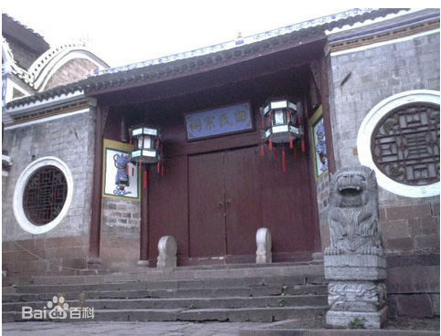

凤凰-田家祠堂
凤凰景点
田家祠堂位于沱江北岸的老营哨街，始建于清道光十七年（1837年），为时任钦差大臣、贵州提督的凤凰籍苗族人士田兴恕率族人捐资兴建。这是一处具有浓厚民族特色的氏族祠堂建筑群。有大门、正殿、戏台20多间屋宇，并有天井、天池、回廊，还设有"五福"、"六顺"两门。祠堂大门前有有六级用红砂石条砌成的扇形台阶。阶前有一块较宽的空坪，大门建筑三间，中间大门呈八字形，两边次间均为青砖砌就，原有石象一对、石鼓一双，极具气派。
民国初，湘西镇守使、国民党中将田应诏（田兴恕之子）又斥巨资最后修建完工。这是一处具有浓厚民族特色的氏族祠堂建筑群。有大门、正殿、戏台和20多间屋宇，并有天井、天池、回廊，还设有“五福”、“六顺”两门。
田家祠堂的戏台为六角飞檐古建筑，歇山顶，饰如意斗拱，左右有次间，是演职员演出间歇休息的场所。
最佳旅游时间
田家祠堂是室内景点，受天气影响较小，从天气角度讲，景区地处湖南湘西地区，湘西气候属于亚热带季风湿润气候。境内气候温和，四季分明，光照充足，雨水丰沛，年均降水量1300-1500毫米。年平均气温12℃-16℃，最热的七月平均气温24℃-27℃，最冷的一月平均气温1.7℃-4.3℃。无霜期达240-288天。 田家祠堂四季皆适合旅游，最佳时间为4-11月份。